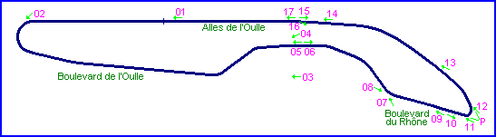
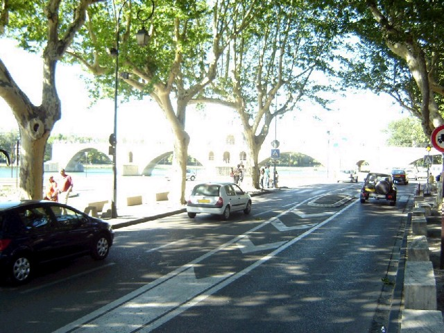
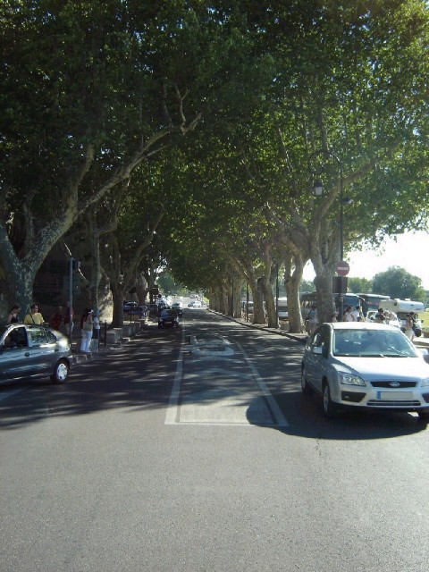
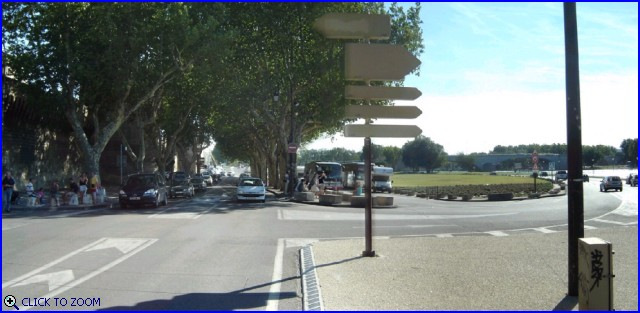
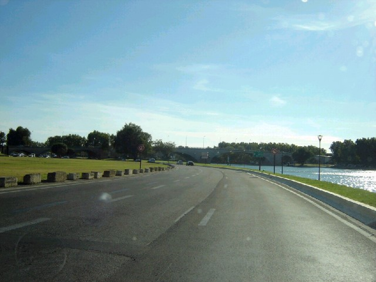
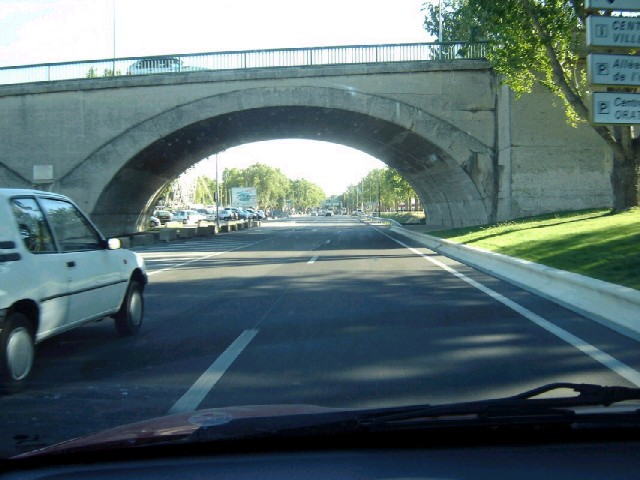
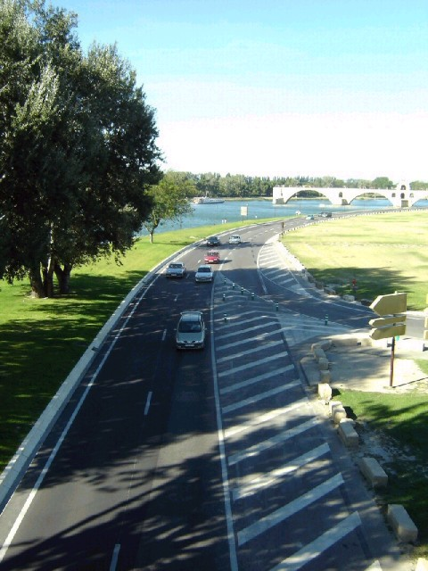
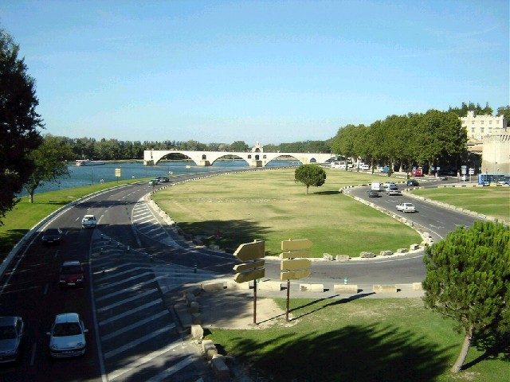
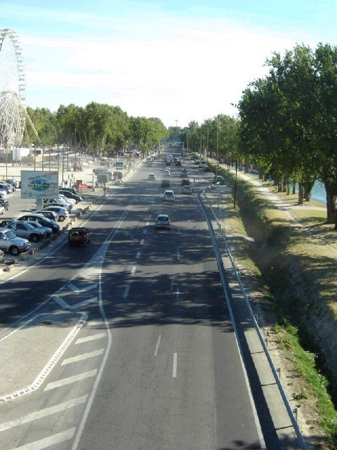

12 - The straight after the sharp left.
Avignon |
Page 2 of 2 |
|| Contents || Page 1 (#01-#09) | Page 2 (#10-#17) || Home ||

Numbers on the map represent the location where the photographs were taken. Click
hyperlinks above to view the photographs.

10 - Looking forward from the same position.

11 - Looking back from the sharp left
corner.

P1 - A view of the sharp left corner. [Click here to zoom
in]
12 - The straight after the sharp left.

13 - Driving on the straight alongside the
Rhône.

14 - Driving on the Alles de l'Oulle,
towards the start/finish-line.

15 - Looking back towards the sharp left
corner.

16 - In the back the Pont St-Bénézet or
also knows as Port d'Avignon.

17 - Looking towards the start/finish-line.
The pits should have been on the left side.
| << PREVIOUS PAGE |
Return to racingcircuits.net's Photo Archive Main Index
©2005 Roelard Smit. Reproduced here with kind permission.